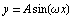
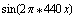
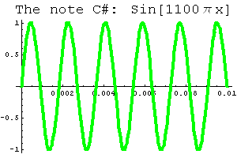
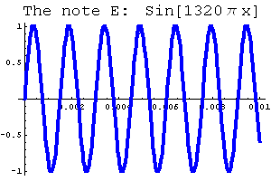
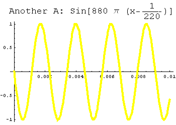
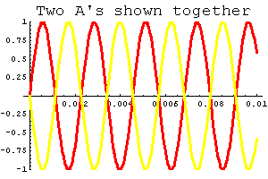
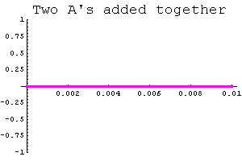

We've studied the graph of  in some detail in class. You might wonder, "Why do we care? Does this ever show up in real life?" The answer is most definitely yes. Sinusoidal waves (or sine waves for short) have turned out to be essential to understanding how our world works.
One example is sound: whenever you play an instrument, or listen to your stereo, you're listening to sound waves. We can think of these as having the shape of sine waves. For example, if you know anything about playing a piano, the note A above middle C produces a wave shaped like . If you figure out the period of this function (using the theorem from class) you'll see that this wave has 440 complete cycles every second. Here's a piece of the graph; click on the link below the picture to hear the sound this function creates.
If we change the number of cycles the wave completes every second -- in other words, if we change the period of the sine wave -- then we change the sound. Here are the equations and graphs of two other notes, C Sharp (C#) and E.
|  |  |
| Play the note C# | Play the note E |
Of course, when you listen to your stereo you hear more than one note at a time. How does that work? Simple: just take the sine functions for all of the notes and add them together. I've done that here with the notes A, C#, and E. (If you have any experience as a musician, you'll recognize that we're forming a major chord here.)
There are some interesting things about this picture. First of all, the graph is no longer a sine curve, but there's definitely a pattern to it. Moreoever, the pattern repeats, so this is still a periodic function.
Whenever you see an "oscilloscope," for example when you play music using certain programs on a computer, you're really seeing a whole bunch of sine waves added together. Who knew?
You may have seen advertisements for "noise reducing" headphones. (If not, you can see a description of one here.) Here's a rough idea of how they work. First they figure out what kind of noise is reaching your ears. Essentially this means it does "curve fitting" like we did in class; it figures out the sine waves of the ambient sounds. Then it creates additional noise whose sine waves cancel out the ambient sounds. It's strange, but true: you add together the original noises and new noises, and it all just seems to disappear!
Here's an example. On the left you'll see the note A from above. On the right I've used a phase shift to create another sine wave with the same amplitude and period. If you listen to the sound file, you'll see that this also corresponds to the note A.
|  | |
| Play the note A | Play the (shifted) note A |
Suppose your neighbor keeps playing a recording of the original A note, and it's driving you nuts. It turns out the shifted version above is just the thing to prevent a headache. Below you can see these two sounds graphed together; that picture should help you believe that, when you add these two sine waves together, they cancel, and you get zero. Ahhhhh, peace and quiet....
|  |  |
| Play this "sound" |